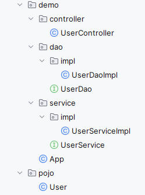
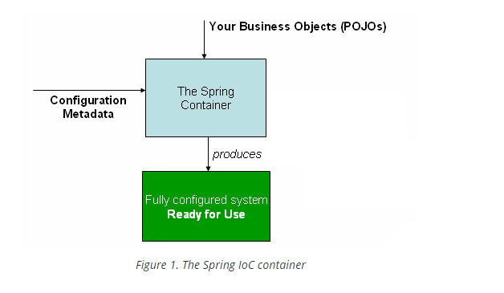
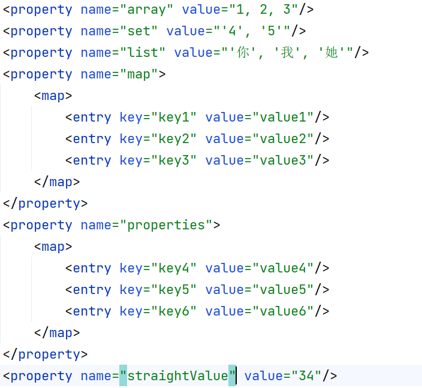

day0918
day0915
commit:
- demo: controller -> service -> dao 抽象架构: @see day0915.demo
- 
- spring xml 配置bean ClassPathXmlApplicationContext：通过改变配置文件达到不修改代码实现实现类转换
- 简化抽象结构: @see day0915.simple
-
Inversion
of Control(IoC)
- 
- DI - Setter-based dependency
injection: 用property时注入dependency依赖，在new对象时构造所依赖的对象
- 测试Servlet的init，构造器方法哪个先被调用
- 配置文件添加init，destroy方法指定
- InitializingBean, DisposableBean: 通过实现这两个接口，在生命周期始末调用这两个方法
- DI: 通过构造函数实现依赖注入 <constructor-arg />
- DI: 通过配置文件给各种类型的数据赋值 各种方式 @see bean.xml
- 
day0914
commit
- mybatis动态sql语言：查询(where-if 与 choose-when): 用于动态查询
- mybatisSql: 增
- mybatis动态sql语言：改: (set-if)
- mybatis动态sql语言：批量删除: <foreach collection="array" separator="," open="(" close=")" item="id"><foreach/>
collection：array：传入的是数组; list:传入的是集合
separator: 每个元素用什么分割；
open，close：分别写在循环前和循环后。
- 将test写的动态，不需要随着数据库的变化而变化: 将测试写的普适性更高
day0913
- coding... 动态生成博客列表页，动态dadwdwdsdadw 生成博客文章详情页，对应的servlet，service，dao
day0912
- coding...博客列表，博客详情页
- 测试类：assertNull()，assertNotNull()的使用方法
commit:
- <sql id="select-column">
，resultMap：通过两种方式配置文件使java的pojo类属性与数据库columns的不同名但相对应的属性匹配
- BlogListMapperTest@selectByCondition 传参数：
向mybatis实现类传参数，通过接口方法形参处注释@param，或在xml文件中用默认参数指定法，如#{arg0},#{arg1},#{arg2}。
- BlogListMapperTest@selectByCondition 传pojo类: 向mybatis实现类传具体java类，通过#{stateName}识别。
- BlogListMapperTest@selectByCondition 传map： 顾名思义，同样可以通过#{key}识别。
markdown转html
- 手动转成html
- 通过在线网站转成html
- 引入commonmark依赖
- 引入commonmark拓展依赖用于给h系列标签添加id，便于后期生成toc
day0911
day0910
day0908
day0907
day0906
- 学习SLF4J的代码结构，面向接口编程，通过修改配置，实现Dao层，JDBC与Mybatis实现的切换
day0905
- 用mybatis替换jdbc
- 引入原因：JDBC的代码依旧非常繁琐，需要进一步封装
- 官网
- 例子可见day0905.UserDaoMybatisImpl.java
- SLF4J
- 更好的log系统，通过对这个包的结构观察，对我们写自己的代码结构有着借鉴意义，铭记面向接口编程
- 官网
commit：
- Hello SLF4J: 第一个例子，运行报错，只引入api依赖，未引入实现依赖
- SLF4J with NOP provider: 引入一个空的实现
- SLF4J with Simple provider: 引入一个simple实现依赖
- To switch logging frameworks, just replace slf4j binding on your class path: 通过依赖更换实现类到jdk17
- LogVSSout: 系统输出与log输出的区别
- logback-classic: 引入一个classic实现依赖，可以脱离api依赖
- parameterized messages: 带参log的写法
- getLogger: 常规写法
- LoggerAnnotation: 通过lombok依赖的注释简化写法
- console appender: 通过配置更改log的内容
- file appender: 通过配置将log内容写入文件
- pattern property: 通过property配置log的pattern使适配多处，利于后续的维护修改
day0904
- 线程池druid
- 引入原因：JDBC 的connection不适合单例，会引发线程问题，但若不单例，无限的new新的Connection会增加代码负担，线程池就是用来解决这一问题，通过new
一定数量的初始connection，限制最大的connection数量，有效的控制服务器的负担
- 官网
- 例子可见day0904.UserDaoJDBCImpl.java
day0901~day0903
Listener
filterBase
session
cookie
jsp el 与jstl
jsp
发送图片
跳转页面
request方法
任意匹配：/ || /*
后缀匹配：*.suffix
目录匹配：/user/*